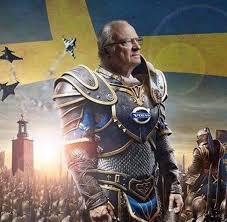

Carl Gustaf Folke Hubertus, född 30 april 1946 på Haga slott i Solna, Stockholms län, är Sveriges konung och statschef sedan 15 september 1973 då han efterträdde sin farfar Gustaf VI Adolf. Han är son till arvprins Gustaf Adolf och prinsessan Sibylla. Han gifte sig 1976 med Silvia Sommerlath. Kort efter hans trontillträde 1973 trädde 1975 en ny regeringsform i kraft enligt vilken kungen främst fick representativa och ceremoniella uppgifter. Regeringsformen medförde även att kungen inte är den som utser Sveriges regering. År 1980 förändrades Sveriges successionsordning, vilket medförde kvinnlig tronföljd. Sedan dess är kronprinsessan Victoria den som står högst upp i tronföljden, vilken hon var utesluten från vid sin födsel 1977.
Kung Carl XVI Gustaf är den sjunde regenten av huset Bernadotte, och sedan den 26 april 2018 den längst regerande monarken i Sveriges historia samt, sedan den 14 januari 2024, den längst nu regerande monarken i Europa.
När Gustaf VI Adolf avled den 15 september 1973 klockan 20:35, blev kronprins Carl Gustaf, 27 år gammal, Sveriges kung. Han hade vakat vid sin farfars dödsbädd i Helsingborg och samma dag som valet till riksdagen hölls, ankom han till huvudstaden som monark den 16 september på Bromma flygplats, där statsminister Olof Palme, finansminister Gunnar Sträng, landshövding Hjalmar Mehr och tusentals andra tog emot den unge kungen. När han steg ut på slottsbalkongen samm a dag för första gången som monark, skedde detta inför mer än 25 000 människor. Han antog då "För Sverige – i tiden" som valspråk.
.jpg)
.jpg)
Källa: Wikipedia